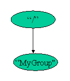

An HDF5 group is a structure containing zero or more HDF5 objects. The two primary HDF5 objects are groups and datasets. To create a group, the calling program must:
H5Gcreate/h5gcreate_f.
To close the group, H5Gclose/h5gclose_f
must be called. For example:
C:
group_id = H5Gcreate (loc_id, name, size_hint); status = H5Gclose (group_id);FORTRAN:
CALL h5gcreate_f (loc_id, name, group_id, error, size_hint=size)
or
CALL h5gcreate_f (loc_id, name, group_id, error)
CALL h5gclose_f (group_id, error)
group.h5 (groupf.h5 for FORTRAN),
creates a group called MyGroup in the root group,
and then closes the group and file. h5_crtgrp.cgroupexample.f90CreateGroup.java
H5Gcreate/h5gcreate_f creates
a new empty group, named MyGroup and located in the
root group, and returns a group identifier.
C:
hid_t H5Gcreate (hid_t loc_id, const char *name, size_t size_hint)FORTRAN:
h5gcreate_f (loc_id, name, group_id, hdferr, size_hint)
loc_id INTEGER(HID_T)
name CHARACTER(LEN=*)
group_id INTEGER(HID_T)
hdferr INTEGER
(Possible values: 0 on success and -1 on failure)
size_hint INTEGER(SIZE_T), OPTIONAL
(Default value: OBJECT_NAMELEN_DEFAULT_F)
H5Gclose/h5gclose_f closes the group.
This call is mandatory.
C:
herr_t H5Gclose (hid_t group_id)FORTRAN:
h5gclose_f (group_id, hdferr)
group_id INTEGER(HID_T)
hdferr INTEGER
(Possible values: 0 on success and -1 on failure)
group.h5 and the
definition of the group are shown below. (The FORTRAN program
creates the HDF5 file groupf.h5 and the resulting DDL shows
groupf.h5 in the first line.)
Fig. 8.1 The Contents of group.h5.
|
Fig. 8.2 group.h5 in DDL |
|
|  |
HDF5 "group.h5" {
GROUP "/" {
GROUP "MyGroup" {
}
}
}
|